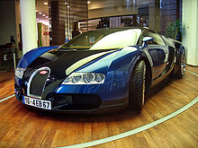

Competición
Grandes Premios
Tanto por su innovación como por sus muchos años de experiencia, Bugatti con su azul tradicional19 fue una marca muy respetada y admirada que rivalizaba con las marcas más emblemáticas de la época en cuanto a estilo y deportividad. Una marca que a pesar de ser francesa, fue fundada en una zona de Alsacia que entonces formaba parte de Prusia, por Ettore Bugatti, de ascendencia italiana.
En el año 1921 dos Bugatti T13 participaron en la " I CURSA INTERNACIONAL DE VOITURETTES " Gran Premio de la Penya Rhin. Disputado en el Circuito de Vilafranca del Penedès. Luciendo el color negro, que les había correspondido en el sorteo previo a la carrera. Ambos coches subieron al podio, en primera y segunda posición. El coche ganador fue pilotado por Pierre de Vizcaya y en segunda posición por Pere Monés Maury.
El Bugatti Type 32 fue diseñado y fabricado en 1923. Conocido como el "tanque de Tours", el T32 contaba con una carrocería con un primer intento de aerodinámica para reducir la resistencia del aire, idea con la que Bugatti empezó a experimentar a principios de la década de los años 20 con un coche carenado que se aprovecharía de una resistencia del aire reducida y un peso relativamente ligero. Pero esta idea no tuvo éxito alguno en el Type 32, que solo disputó una carrera, el Gran Premio de Francia de 1923, disputado en Tours. Fue una carrera de 35 vueltas a un trazado de casi 23 km para llegar a un total de 800 km de distancia del Gran Premio. Ernest Friderich fue el único piloto en llevar el Type 32 a la línea de meta y lo hizo en tercera posición, lo que puede considerarse como un éxito a medias. El mal rendimiento de aquel T32, que montaba un novedoso sistema hidráulico para los frenos delanteros, hizo que Bugatti desestimara el proyecto y se centrara en sus siguientes máquinas.20
El Bugatti Type 35 fue el coche más exitoso en las carreras para Bugatti e indudablemente uno de los más exitosos de toda la historia del automovilismo, con un total de victorias que excede el millar (en sus mejores tiempos, el T35, que participaba en un sinfín de carreras, conseguía la abrumadora media de 14 victorias por semana). Entre estas, está el éxito en el Campeonato Mundial de Fabricantes de 1926 y las cinco victorias consecutivas en la Targa Florio, de 1925 a 1929.21
También fue el modelo que venció en el primer Gran Premio de Mónaco, disputado en 1929, con William Grover-Williams al volante. Hubo muchísimas versiones del Type 35, empezando por la primera evolución, llamada Type 35A, la Type 35B, y las versiones T35C y T35T. Los modelos Type 37 y Type 39 eran esencialmente el mismo coche con un nuevo motor, que llevaba la potencia bastante más allá de los 90 caballos que había tenido la primera versión.
Los T35 y sus derivados seguirían ganando en Bélgica, Mónaco, Checoslovaquia, Italia y España durante varios años, demostrando que no en vano Bugatti había dado con exactamente lo necesario para vencer en cualquier circunstancia. Además, los chicos de la marca francesa podían vanagloriarse de tener el único coche del momento que podía competir en las carreras pero también circular por las calles y venderse a particulares.22
El modelo Bugatti Type 57 fue una creación de Jean Bugatti, hijo del fundador, que además buscó basarse en conceptos que la propia marca había explorado en el pasado aunque sin el éxito deseado. El Type 57 reutilizaba el motor de otro modelo, pero con una concepción totalmente distinta, basada en el T32 con un diseño aerodinámico. Ese fue el gran éxito del Type 57, que tras aprovechar lo que nadie había aprovechado anteriormente, ganó las 24 Horas de Le Mans de 1939.
Todo iba bien para la marca, que estaba creciendo a pasos de gigante. Sin embargo, el propio Jean Bugatti se subió al coche ganador para realizar unas pruebas en una carretera cerrada, pero tras tener que realizar un giro brusco para evitar a un ciclista ebrio que se había colado al tramo de ensayos, sufrió un accidente y falleció a la temprana edad de 30 años. Fue un duro golpe para una marca que entonces necesitaba más que nunca a uno de sus hombres clave, que con el T57 había dado un nuevo salto de calidad.
Esa victoria en Le Mans, con los míticos Jean-Pierre Wimille y Pierre Veyron compartiendo el volante, fue la última de Bugatti,23 que no supo recuperarse de la pérdida del hijo del fundador. A pesar de ello, sus modelos siguieron destilando clase en la calle y el Type 57 Atalante llegó a ser uno de los más famosos de toda la historia de la marca, junto al Type 35 que tantos éxitos había cosechado en los circuitos pero que tan apreciado había sido fuera de ellos también.
Fórmula 1
El tiempo dejaba a Bugatti fuera de onda en términos de carreras, pero en los años 50 se realizó un último intento tan desesperado como serio. La marca francesa, dirigida por Roland Bugatti, se hizo con los servicios de Gioacchino Colombo, conocido por su tiempo en Ferrari, y le pidió que diseñara un Bugatti para participar en la Fórmula 1. El nuevo coche, el Type 251, tenía un novedoso tipo de suspensiones y un motor de ocho cilindros en línea montado transversalmente detrás del piloto.
Cuando el monoplaza estuvo finalizado, se inició el programa de pruebas desde principios de 1956 y el equipo convenció al veterano Maurice Trintignant, ganador del Gran Premio de Mónaco del año anterior con Ferrari, para que disputara su carrera de casa con un equipo de casa. Maurice Trintignant pilotó el Bugatti en el debut de la marca en el Gran Premio de Francia de 1956, en el circuito de Reims.
Clasificado en decimoctava posición (sobre veinte) en los entrenamientos clasificatorios, el coche no fue competitivo en ningún momento y tras dieciocho vueltas, un problema en el acelerador lo dejó fuera de carrera. El proyecto del Type 251 quedó aparcado para siempre al darse cuenta Bugatti de que no tenían los medios necesarios para hacer evolucionar un coche tan lento, y prefirieron retirarse de la competición.2425
Resistencia
El Bugatti EB110 se presentó el 15 de septiembre de 1991, exactamente 110 años después del nacimiento de Ettore Bugatti (de ahí el nombre) e inicialmente quería convertirse en el coche que provocara el renacimiento de la marca. Contaba con un motor V12 que rendía 550 caballos de potencia (600 en su versión SuperSport), alerón trasero electrónico y las espectaculares puertas de estilo tijera.
Tan solo llegaron a fabricarse 95 unidades de la versión original y 31 de la versión SS (una de las cuales perteneció al piloto alemán de Fórmula 1, Michael Schumacher). En cuanto a la competición, su presencia fue testimonial. A pesar de ello, el EB110 es el último Bugatti en tomar parte en una carrera. Concretamente en dos; las 24 Horas de Le Mans de 1994 y las 24 Horas de Daytona de 1996.
El coche no tuvo un mal rendimiento aunque no llegó a terminar ninguna de las dos carreras por problemas técnicos. En Le Mans, se clasificó en décimoséptima posición de la general, quinta de GT1 con pilotos como Alain Cudini, Éric Hélary y Jean-Christophe Boullion pero se vieron obligados a abandonar tras 230 vueltas cuando luchaban por el podio de su categoría. En Daytona, dos años después, los pilotos incluían a Derek Hill, hijo de Phil Hill, y a Olivier Grouillard, expiloto de Fórmula 1. Se clasificaron en vigesimotercera posición sobre 76 coches, debido a que tuvieron que abandonar por problemas en la caja de cambios cuando lideraban su categoría.26